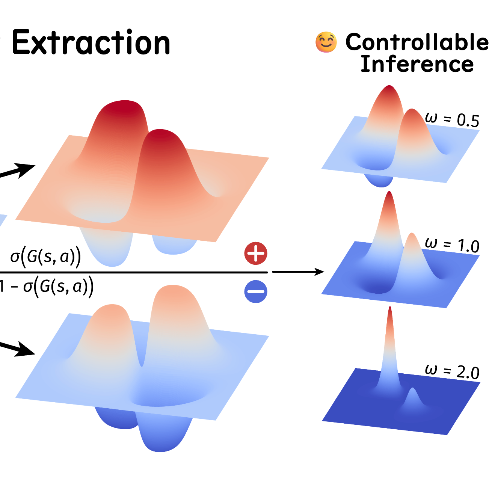
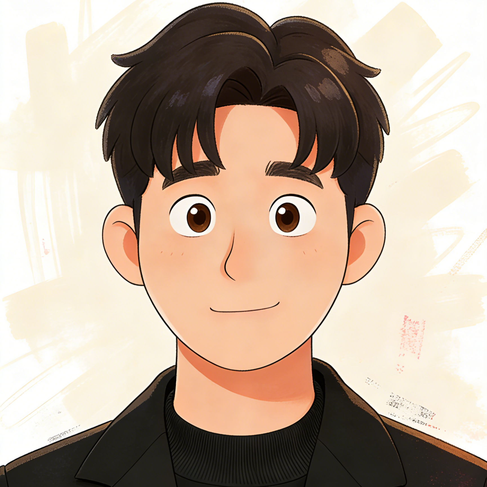
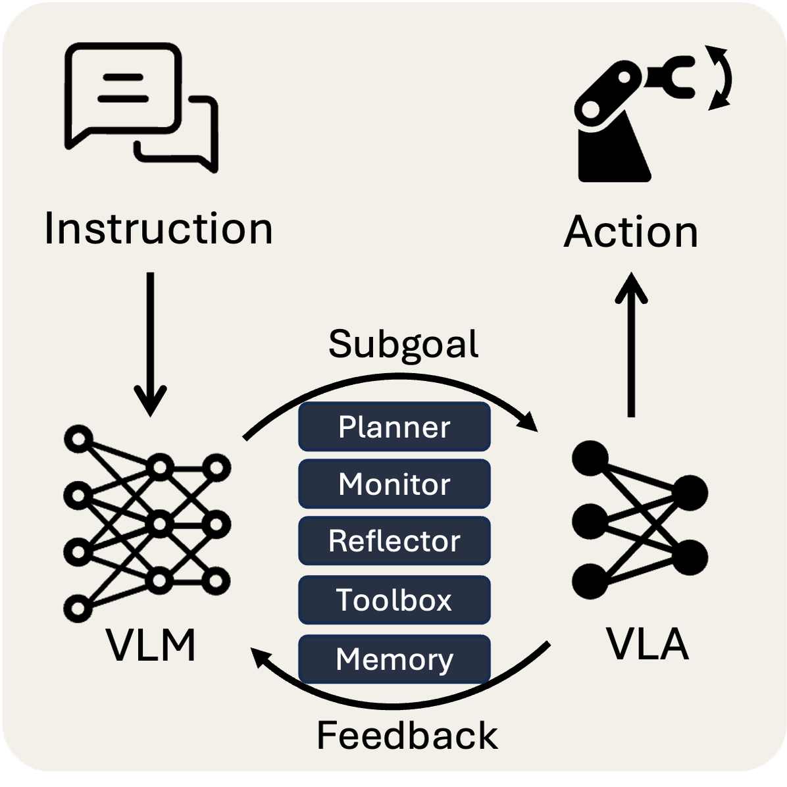
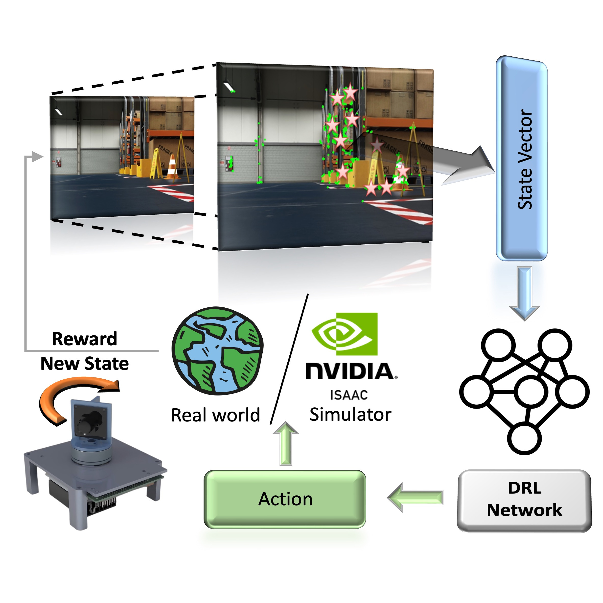

Dichotomous Diffusion Policy Optimization
Positive policy + Negative policy + CFG = Controllable inference policy
Embodied AI · Robotics · RL
A second-year Ph.D. student at School of Advanced Manufacturing and Robotics, Peking University, advised by Professor Junzhi Yu.
Also a research intern at Beijing Zhongguancun Academy, advised by Professor Xingyu Chen.
Prior to that, I earned my B.Eng. degree in Intelligent Manufacturing Engineering from the Beijing Institute of Technology (BIT).
My research interests focus on Embodied Intelligence and Robotics, including VLA, VLN, RL and Control.


Thanks to all collaborators and supporters, looking forward to more exciting research ahead!
My long-term vision is to build the BRIDGE between artificial intelligence and the physical world — shaping truly embodied intelligence. 🤖🧠

Positive policy + Negative policy + CFG = Controllable inference policy
A highly scalable cross-embodiment VLA model that achieves remarkable performance with a tiny model size.

An autonomous scaffolding framework to seamlessly integrate VLA and VLM into real-world embodied agents.
A lightweight visuomotor policy controls robots with latent, backward, recursive subgoals.

A novel ViDAR device with reinforcement learning-based active SLAM method.
A new embodied foundation modeling framework operating in the Universal Action Space.
An approach for training a multimodal robotic policy via only unimodal datasets.
* Equal contribution.